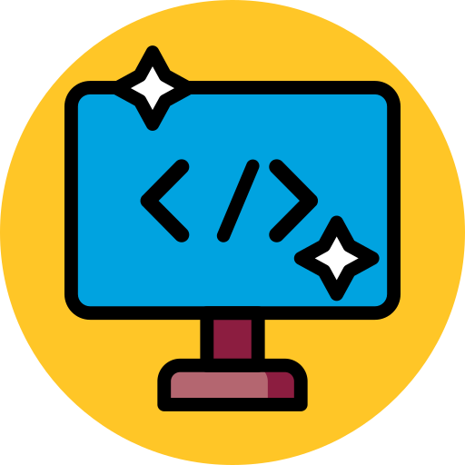

Degree Programs
The graphic information technology program prepares graduates for careers as visual design technologists encompassing front-end Web design and development, printing and digital publishing, commercial photography and videography, and 2D/3D animation game art and animation.
The BS program in graphic information technology prepares students to become visual design technologists with skills in front-end web design and development, print and digital publishing, commercial photography and video production, and motion graphics and visual effects.
The BS program in graphic information technology with a concentration in full-stack web development focuses on front-end and back-end website and application development. This cross-disciplinary program has a foundation in user-centered design and client-side scripting (HTML, CSS, JS) and extends to server-side programming (PHP, Python, SQL, etc.).
The BS program in graphic information technology with a concentration in user experience provides students with an interdisciplinary foundation in design, research and communication to prepare them for the rapidly growing area of user experience.

This graphic information technology program allows students who have an applicable AAS from an accredited institution to transfer 60 credit hours toward a Bachelor of Applied Science degree at ASU.